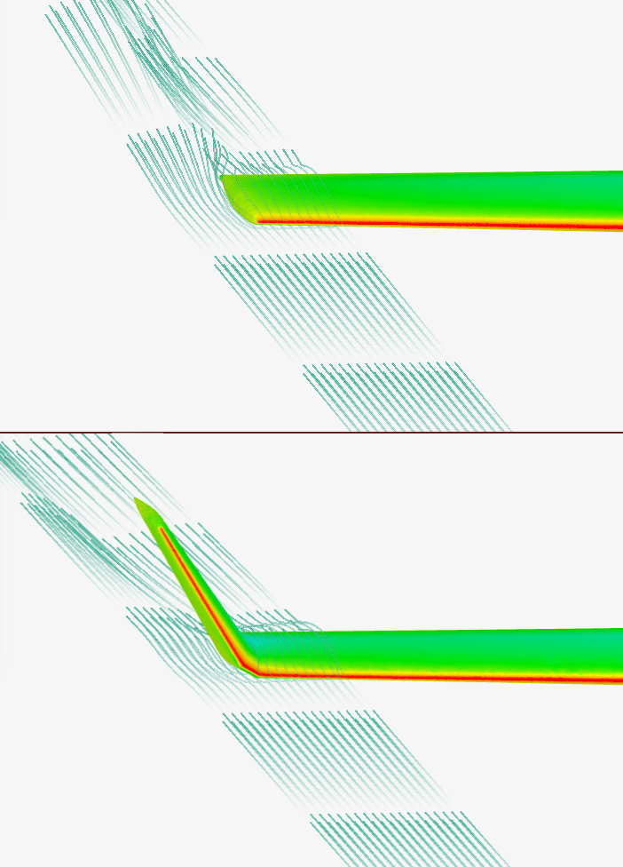

Learnings
This project provided valuable learning experiences in CFD simulation, aerodynamic principles, and data analysis. By modelling and simulating various configurations of the C130 aircraft wing, I gained advanced skills in using Simscale for both steady-state and transient scenarios, and in creating 3D CAD models using OpenVSP. I deepened my understanding of aerodynamic concepts of aircraft wings, including wing and propeller geometry, winglets, and propeller-wing interactions. I also gained insights into wing design and its geometry, improving my ability to interpret simulation results and visualize aerodynamic effects. This project enhanced my problem-solving skills, and explored innovative design solutions like wingtip-mounted propellers.
Project Gallery
